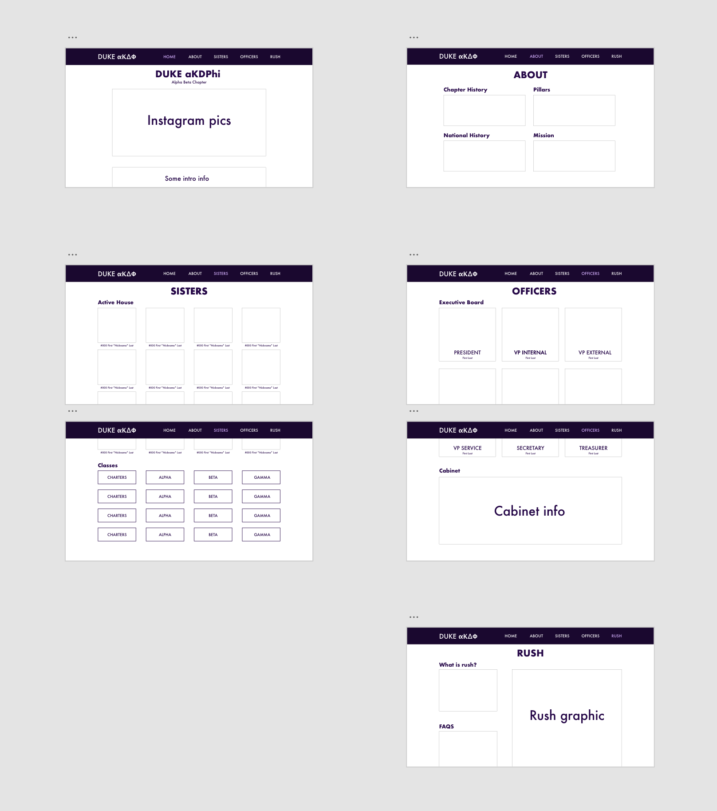

Final Project Proposal
Description Rationale
- I want to build a site for my sorority, aKDPhi, because the current one is out of date, not responsive, and clunky. I want to change it from a single page site to a multipage one since having all the content on one page isn’t great design. Also, the page isn’t that responsive.
- My target audience is anyone who want to learn more about our sorority, our values, potential rushees, alumni, and keep up to date with us. It’s also a good way for other chapters to reach us.
- The visitor should learn about our chapter at Duke, our values, and see who’s currently in the chapter and who’s graduated.
Reference Sites
Information Architecture
- Home
- Photos/Instagram Pics
- Preliminary info about the chapter
- About
- Chapter History
- National History
- Pillars
- Mission
- Sisters
- Active House
- Classes/Alumnae
- Officers
- Rush
- What is rush?
- About this semester's rush
- FAQs
Wireframe
- Color Palette: #D6B2FF, #260848, #FFFFFF
- Typography: Futura
- Wireframe:

Media Elements
- I would need photos of sisters, graphics we've made, photos we've taken, all of which we have rights for.
- I might also be able to use icons that are free online, giving credit to the author.
Interactive Experiences
- Hover to see more info about each sister
- Possible videos
- Clickable things = click links to go to other sites
Timeline of Milestones
- 11/19 – home page done
- 11/23 - about page done
- 12/1 – sisters page done
- 12/7 – finish draft of site
- 12/10 - finish final of site, start testing with people
Criteria for Success
- Finished the above and the basics of the wireframe
- Site is functional at least
- Responsive
- Reach goals:
- Learn some frameworks to be able to make an interactive lineage tree
- Learn how to make a carousel/attach Instagram pictures (without manual download)
- Start thinking about backend member only access?